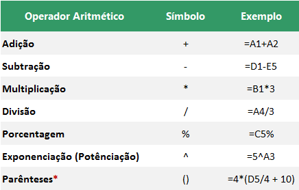
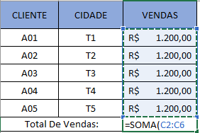
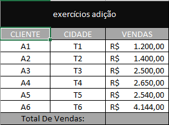

Operadores aritméticos são aqueles segue-se regras básicas da matemática que foram convencionadas na seguinte ordem de resolução. Mas tambêm Os operadores aritméticos tambêm executam operações matemáticas, como adição e subtração com operandos. Já na Programação existem dois tipos de operadores matemáticos: unário e binário. Os operadores unários executam uma ação com um único operando. Operadores binários executam ações com dois operandos.
Primeiros Vamos Fala Do Famoso Adição o mas famoso no mundo do excel e sendo um dos mas facil de fazer. nos Utilizamos a adição em várias situações que envolvem números em nosso cotidiano, por exemplo, para contar objetivos ou, durante as compras, para saber o valor da conta, entre outras.
Então para que nos poder começar primeiro abra seu excel, ou abaixa a planilha cliclando aqui abrindo ja seu excel temos que entender Para realizar contas somando valores distribuídos entre diferentes células, você só precisa inserir o símbolo de igual “=”, escrever “SOMA” e abrir parênteses “(”. Feito isso, é só selecionar as células que deseja somar veja um exemplo abaixo.
Então Coloca os sinais e quando aparecer seleciona a celula e arrasta para baixo, o resultado será 6000$ ou tambêm pode ser usar =(A1+A2+A3+A4) tambêm da certo agora tente fazer isso! a tabela abaixo tem um exercício! tente o fazer
Parabêns! se você conseguiu fazer esse Exercício! se no seu total de vendas deu 14.434$ você acertou! agora caso você não conseguiu veja o vídeo cliclando no link para ver uma vídeo aula no youtube!